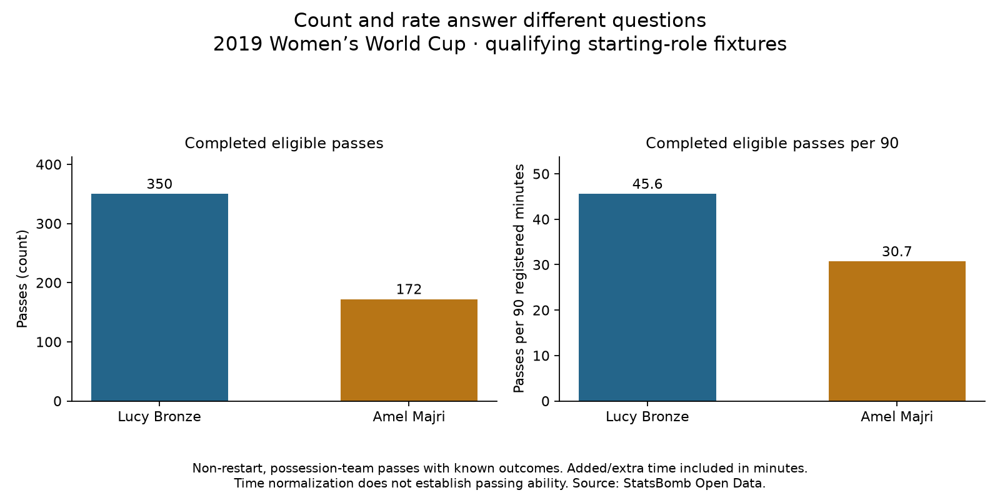

Football analyst training · Recruitment phase · Lesson 65
Compare passing over equal time.
Read: Soccermatics Lesson 3 — Statistical scouting → Normalisation.
We counted eligible pass attempts and completions for all 35 selected players, using the same qualifying matches and registered intervals as their minutes.
Two worked examples
Bronze: 350 completed passes ÷ 691.1842 minutes × 90
= 45.6 completed eligible passes per 90
Majri: 172 completed passes ÷ 504.22985 minutes × 90
= 30.7 completed eligible passes per 90
What passes did we count?
Passes by the selected player while registered in a qualifying match, with the player's team recorded as the possession team. Restart deliveries are excluded. Unknown-outcome and injury-clearance passes are excluded. All completed passes and known failed attempts remain in their appropriate counts. Later passes after a restart can still qualify.
Three different results
- Attempts per 90: passing activity, including known failed attempts.
- Completions per 90: completed passing activity.
- Completion percentage: completed passes divided by attempts, without using minutes.
Bronze completed 350/436 eligible attempts (80.3%); Majri 172/222 (77.5%). Higher activity or completion percentage alone does not establish better ability. Team possession, starting side, pass difficulty, opponents and later role changes remain relevant.
Practice: does 45.6 completed passes per 90 mean Bronze completed exactly 45.6 in every match?
No. It is a time-standardized rate across the selected minutes. Individual match counts can differ.
Run 65_fullback_passing_per90.py in Spyder. The report includes all 35 player summaries. This worked assignment was assisted; ask your teacher about any unclear numerator or denominator.